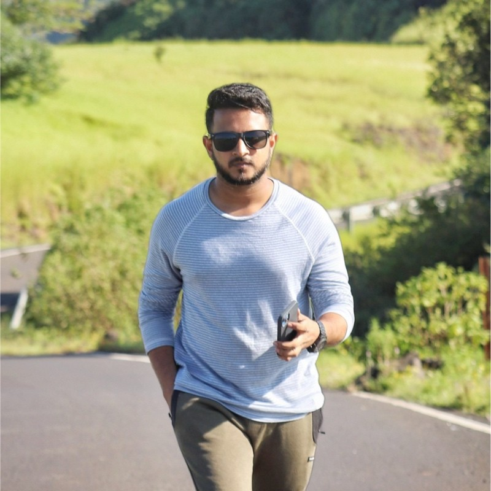

Prasad Kesavarapu
Software developer | +919966221182 |
Linkedin
Summary
Software Developer with 3+ years of experience in React.js, MERN stack, Python, and SQL. Proficient in AI-driven solutions, chatbot development, and performance optimization. Skilled in state management, API
integrations, and scalable architecture for high-performance applications.
Education
B.Tech in Mechanical Engineering
VSM College of Engineering | Graduated: 2021 | GPA: 7.5
Work Experiance
ADP
Hyderabad | Nov 2022 – Present
- Developed user-centric React.js applications, increasing engagement by 25%.
- Integrated Generative AI solutions using Python & SQL for data analytics.
- Optimized front-end performance with Redux, reducing load times & enhancing UX.
- Collaborated on RESTful API integrations ensuring seamless data flow.
- Conducted code reviews & mentorship, fostering a knowledge-sharing culture.
TCS
Hyderabad | Feb 2022 – Oct 2022
- Developed MERN stack applications, contributing to full SDLC.
- Migrated legacy systems, reducing load times & improving UX.
- Participated in Agile methodologies, including sprint planning & retrospectives.
Skills
- Languages: JavaScript, HTML, CSS, Python, SQL
- Frameworks & Libraries: React.js, Node.js, Express.js, MongoDB, Redux
- AI & Data Technologies: Generative AI, NLP, Data Analytics
- Tools & Technologies: Git, RESTful APIs, Webpack, Axios, AWS
- Development Methodologies: Agile, Scrum, CI/CD
Projects
AI-Powered Chatbot for Customer Support
- Developed a React.js chatbot integrated with Python (NLTK, spaCy) for intelligent responses.
- Deployed on AWS with a RESTful API backend for real-time data processing.
E-Commerce Platform with MERN Stack
- Built a full-stack e-commerce app with MongoDB, Express.js, React.js, and Node.js.
Implemented JWT, Optimized performance, improving transaction processing time by 20%.